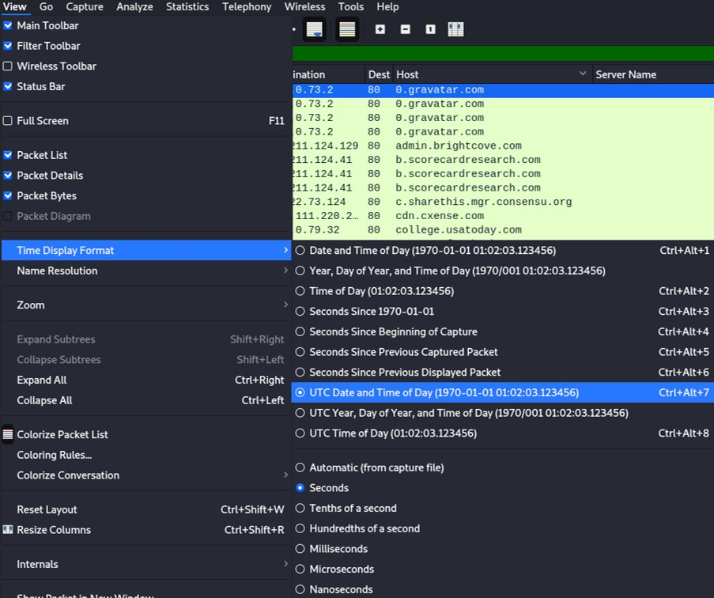

Wireshark is one of the most used network protocol analyzer. Network engineers, cyber security engineers and any person who want to deep dive into network analysis might use Wireshark. Wireshark runs on many platforms (Windows, Linux, MacOS) and uses pcap to capture packets, therefore it can only capture packets that pcap supports. In this tutorial, I'll give you the fundamental points that might help you to start analyzing packets with Wireshark.
1/ Adding & Removing columns
To add or remove columns, click on any column header and select "Column Preferences..."
 On the bottom of the windows, the "+" allows you to add a column and the "-" to remove the selected column(s). At the beginning, you might want to remove the "No." (frame number), "length" and "Protocol" to lighten the number of columns in the UI.
On the bottom of the windows, the "+" allows you to add a column and the "-" to remove the selected column(s). At the beginning, you might want to remove the "No." (frame number), "length" and "Protocol" to lighten the number of columns in the UI.
You can also apply a value of a field from a result to a column. Let's take an example. We are analyzing some web traffic, Hypertext Transfer Protocol is the most common protocol to communicate between a client and a server in the World Wide Web.
- The client initiates the handshake by sending a "hello" message to the server. The client "hello" message contains TLS version supported, cipher suites supported and the "client random".
- The server reply the client with a server "hello" message containing the server's SSL certificate (Cipher suite chosen, server's public key, and other parameters are inside).
- The client receives the server's SSL certificate and verify it, by decrypting it using the server's public key.
- The client send back to the server a premaster secret by encrypting it with the server's public key.
- The server validates the premaster secret, by decrypting it with his private key.
- Having the client random, the server random, and the premaster secret, session keys are created.
- The client and the server send a "finish" message encrypted with a session key.
- The communication continue by encrypting with the session keys.
By default, the time shown in the column "Time" is set to "Seconds Since Beginning of Capture". May be you're not interested in that format and you want to change it. To do so, click on "View", followed by "Time Display Format" and set the time you want. Personally I like the format "UTC Date and Time of Day", also set "Seconds" for most of the cases. 
3/ Classic queries cheatsheet
HTTP: http.request
To find the domain name, expand Hypertext Transfer Protocol, and find "Host:[DOMAIN_NAME]"
HTTPS: ssl.handshake.type==1
To find the domain name, expand "Transport Layer Security", "Handshake Protocol: Client Hello", "Extension: server_name", "Server Name Indication extension", and you will find Server name: [DOMAIN_NAME]
FTP requests: ftp.request.command
There are different types of FTP request.
RETR (retrieve) means that the user downloaded the file from the server.
SIZE returns the size of a file.
USER shows the user authentication.
ftp-data to get the data transmit from the client to the server.
TCP SYN: tcp.flags == 0x002
TCP SYN indicates if the host has made a TCP connection attempt to another server.
DHCP: dhcp
To get the client MAC address, expand "Dynamic Host Configuration Protocol (request)", expand "Option: Client identifier", and you should see "Client MAC address"
To get the Hostname, expand "Dynamic Host Configuration", expand Option: Host Name, and you should see the Host Name.
Netbios: nbns
Netbios is used to identify a hostname from Windows systems. To find the hostname, expand "NetBIOS Name Service", expand "Additional records" and you should find the computer name.
Kerberos: kerberos.cnamestring
Kerberos traffic can also help you to identify the host name. Expand "Kerberos", expand "as-req", expand "req-body", expand "cname", expand "cname-string" and the value of "CNameString" is the hostname.
4/ Exporting object from a PCAP
Wireshark managed to capture three GET requests. One GET request is sent to www.msftncsi.com and pull the file ncsi.txt. The others are sent to smart-fax.com and get a .doc and a .exe files.
To extract those objects, go to File -> Export Objects -> HTTP...
To export emails such as .eml files, instead of clicking on HTTP, click on IMF (Internet Message Format).
To export FTP object, you must know the difference types of requests.
From Wireshark, we see that some files have been requested. Those files are executable files, we won't be able to export them as previously shown for HTTP object or IMF object.
Fiter on "ftp-data" to see the data transmit from the client to the server. Then select any request with an executable file, and right click on to follow the TCP stream. Click on Show data as "Raw".
Click on "save as..." and save it as an executable file, because the client requests an executable file.